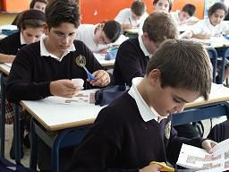

 La educación puede definirse como el proceso de socialización de los individuos. Al educarse, una persona asimila y aprende conocimientos. La educación también implica una concienciación cultural y conductual, donde las nuevas generaciones adquieren los modos de ser de generaciones anteriores.
El proceso educativo se materializa en una serie de habilidades y valores, que producen cambios intelectuales, emocionales y sociales en el individuo. De acuerdo al grado de concienciación alcanzado, estos valores pueden durar toda la vida o sólo un cierto periodo de tiempo.
En el caso de los niños, la educación busca fomentar el proceso de estructuración del pensamiento y de las formas de expresión. Ayuda en el proceso madurativo sensorio-motor y estimula la integración y la convivencia grupal.
La educación formal o escolar, por su parte, consiste en la presentación sistemática de ideas, hechos y técnicas a los estudiantes. Una persona ejerce una influencia ordenada y voluntaria sobre otra, con la intención de formarle. Así, el sistema escolar es la forma en que una sociedad transmite y conserva su existencia colectiva entre las nuevas generaciones.
Por otra parte, cabe destacar que la sociedad moderna otorga particular importancia al concepto de educación permanente o continua, que establece que el proceso educativo no se limita a la niñez y juventud, sino que el ser humano debe adquirir conocimientos a lo largo de toda su vida.
Dentro del campo de la educación, otro aspecto clave es la evaluación, que presenta los resultados del proceso de enseñanza y aprendizaje. La evaluación contribuye a mejorar la educación y, en cierta forma, nunca se termina, ya que cada actividad que realiza un individuo es sometida a análisis para determinar si consiguió lo buscado.